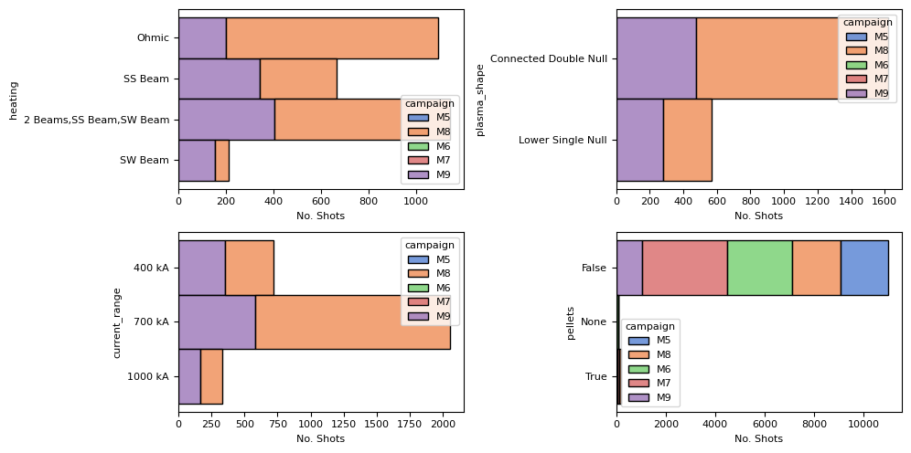
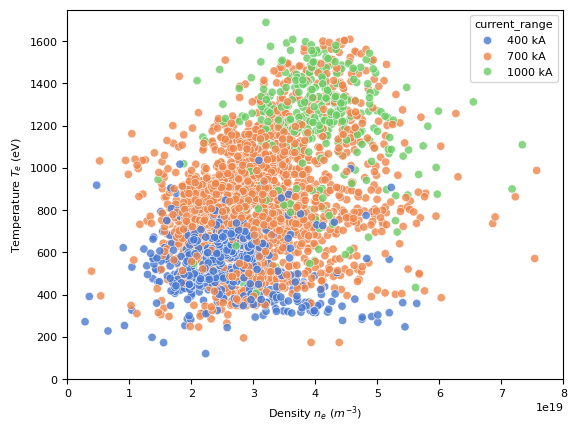

!pip install matplotlib pandas pyarrow seaborn
import pandas as pd
import seaborn as sns
import matplotlib.pyplot as plt
plt.rcParams["font.family"] = "sans"
plt.rcParams["font.size"] = 8
sns.set_palette('muted')
Shot Metadata#
This notebook contains a demonstration of plotting several of the summary statistics that accompany the shot metadata.
Firstly, we’re going to load all the shot data into a pandas dataframe:
summary = pd.read_parquet('https://mastapp.site/parquet/level2/shots')
summary = summary.loc[summary.shot_id <40000]
summary
| context | url | preshot_description | postshot_description | campaign | current_range | divertor_config | plasma_shape | commissioner | facility | ... | cpf_vol_ipmax | cpf_vol_max | cpf_vol_truby | cpf_wmhd_ipmax | cpf_wmhd_max | cpf_wmhd_truby | cpf_zeff_ipmax | cpf_zeff_max | cpf_zeff_truby | cpf_zmag_efit | |
|---|---|---|---|---|---|---|---|---|---|---|---|---|---|---|---|---|---|---|---|---|---|
| 0 | {'dcat': 'http://www.w3.org/ns/dcat#', 'dct': ... | s3://mast/level2/shots/11766.zarr | \nRELOAD 10232 PLASMA CONDITIONING SHOT FROM M4\n | \nGOOD PLASMA, RAN FINE. SL JOINT ALARMS RATHE... | M5 | None | Conventional | None | None | MAST | ... | 8.088068 | 8.478948 | NaN | 9286.269388 | 14370.632 | NaN | NaN | NaN | NaN | -0.011828 |
| 1 | {'dcat': 'http://www.w3.org/ns/dcat#', 'dct': ... | s3://mast/level2/shots/11767.zarr | \nREPEAT\n | \nOK BUT LOST VERTICAL CONTROL - FA2 JUST DIED... | M5 | None | Conventional | None | None | MAST | ... | 7.707199 | 8.559942 | NaN | 7343.788162 | 11461.490 | NaN | NaN | NaN | NaN | -0.007570 |
| 2 | {'dcat': 'http://www.w3.org/ns/dcat#', 'dct': ... | s3://mast/level2/shots/11768.zarr | \nSELECT ALL 4 FAS AND LOAD EFC SETTINGS FROM ... | \nOK. GOT FA4 BUT NOT FA3\n | M5 | None | Conventional | None | None | MAST | ... | 8.300782 | 8.580827 | NaN | 10585.928086 | 12660.081 | NaN | NaN | NaN | NaN | -0.011107 |
| 3 | {'dcat': 'http://www.w3.org/ns/dcat#', 'dct': ... | s3://mast/level2/shots/11769.zarr | \nREPEAT, WITH TF RAISED TO 0.58.\n | \nSLIDING JOINT ALARMS A BIT LOWER. PLASMA OK.\n | M5 | None | Conventional | None | None | MAST | ... | 8.112973 | 8.742647 | NaN | 8189.273726 | 12494.456 | NaN | NaN | NaN | NaN | -0.008156 |
| 4 | {'dcat': 'http://www.w3.org/ns/dcat#', 'dct': ... | s3://mast/level2/shots/11771.zarr | \nRELOADED 11769 AND SET UP PLASMA CURRENT FEE... | \nGOOD PLASMA F/B CONTROL. SLIDING JOINT ALARM... | M5 | None | Conventional | None | None | MAST | ... | 7.978917 | 8.760519 | NaN | 8206.258460 | 12345.816 | NaN | NaN | NaN | NaN | -0.008726 |
| ... | ... | ... | ... | ... | ... | ... | ... | ... | ... | ... | ... | ... | ... | ... | ... | ... | ... | ... | ... | ... | ... |
| 11276 | {'dcat': 'http://www.w3.org/ns/dcat#', 'dct': ... | s3://mast/level2/shots/30467.zarr | \nRepeat with new neutron camera position.\ncH... | \nTwo times lower DD neutron rate than referen... | M9 | 700 kA | Conventional | Connected Double Null | None | MAST | ... | 9.029202 | 9.046394 | NaN | 49469.122469 | 52653.445 | NaN | NaN | NaN | NaN | 0.013202 |
| 11277 | {'dcat': 'http://www.w3.org/ns/dcat#', 'dct': ... | s3://mast/level2/shots/30468.zarr | \nRepeat with new neutron camera position.\ncH... | \nGood beam.\nGood repeat.\n | M9 | 700 kA | Conventional | Lower Single Null | None | MAST | ... | 9.102411 | 9.107017 | NaN | 48516.962675 | 49382.133 | NaN | NaN | NaN | NaN | 0.012445 |
| 11278 | {'dcat': 'http://www.w3.org/ns/dcat#', 'dct': ... | s3://mast/level2/shots/30469.zarr | \nRepeat with increased beam power (74 kV)\ncH... | \nGood shot. Modes present.\n | M9 | 700 kA | Conventional | Connected Double Null | None | MAST | ... | 8.988730 | 9.047923 | NaN | 47466.249616 | 49115.805 | NaN | NaN | NaN | NaN | 0.015299 |
| 11279 | {'dcat': 'http://www.w3.org/ns/dcat#', 'dct': ... | s3://mast/level2/shots/30470.zarr | \nRepeat last using hydrogen in outboard and c... | \nNo HF gas.\n | M9 | 700 kA | Conventional | None | None | MAST | ... | 9.687049 | 10.055509 | NaN | 17290.432865 | 22310.516 | NaN | NaN | NaN | NaN | 0.015164 |
| 11280 | {'dcat': 'http://www.w3.org/ns/dcat#', 'dct': ... | s3://mast/level2/shots/30471.zarr | \nThe last plasma:\nConvert to i/b Helios 1724... | \nGood shot.\n | M9 | 700 kA | Conventional | Lower Single Null | None | MAST | ... | 8.817559 | 9.283702 | NaN | 38063.582380 | 40906.090 | NaN | NaN | NaN | NaN | 0.014340 |
11281 rows × 290 columns
Summary Statistics About Shots#
Let’s look at a summary of simple counts of different shot metadata.
fig, axes = plt.subplots(2, 2, figsize=(10, 5))
ax1, ax2, ax3, ax4 = axes.flatten()
sns.histplot(summary, y='heating', hue='campaign', multiple="stack", ax=ax1)
sns.histplot(summary, y='plasma_shape', hue='campaign', multiple="stack", ax=ax2)
sns.histplot(summary, y='current_range', hue='campaign', multiple="stack", ax=ax3)
sns.histplot(summary, y=summary.pellets.astype(str), hue='campaign', multiple="stack", ax=ax4)
for ax in axes.flatten():
ax.set_xlabel('No. Shots')
plt.tight_layout()

Plasma Beta (\(\beta\)) v.s Confinement Time (\(\tau_E\))#
This plot can show how the efficiency of energy confinement varies with plasma pressure.
plt.figure()
sns.scatterplot(summary, y='cpf_tautot_max', x='cpf_betmhd_max', hue='heating')
plt.xlim(0, 18)
plt.ylim(0, 1)
plt.ylabel('Confinement time $\\tau_E$ (s)')
plt.xlabel('Plasma Beta $\\beta$ (%)')
plt.show()
Plasma Temperature (\(T_e\)) vs. Plasma Density (\(n_e\))#
This can reveal the relationship between temperature and density, which is critical for achieving the conditions necessary for fusion.
plt.figure()
sns.scatterplot(summary, y='cpf_te0_ipmax', x='cpf_ne0_ipmax', hue='current_range', alpha=0.8)
plt.xlim(0, .8e20)
plt.ylim(0, 1750)
plt.ylabel('Temperature $T_e$ (eV)')
plt.xlabel('Density $n_e$ ($m^{-3}$)')
plt.show()

Plasma Current (\(I_p\)) vs. Confinement Time (\(\tau_E\))#
This can indicate how the plasma current affects the confinement time, providing insights into stability and performance.
plt.figure()
sns.scatterplot(summary, y='cpf_ip_av', x='cpf_tautot_max', hue='current_range', alpha=0.8)
plt.xlim(0, 1)
plt.xlabel('Confinement Time $\\tau_E$ (s)')
plt.ylabel('Average Plasma Current $I_p$ (kA)')
plt.show()